La lluvia y la nieve irrumpieron ayer con inusual intensidad en las comarcas de Lleida y Tarragona.
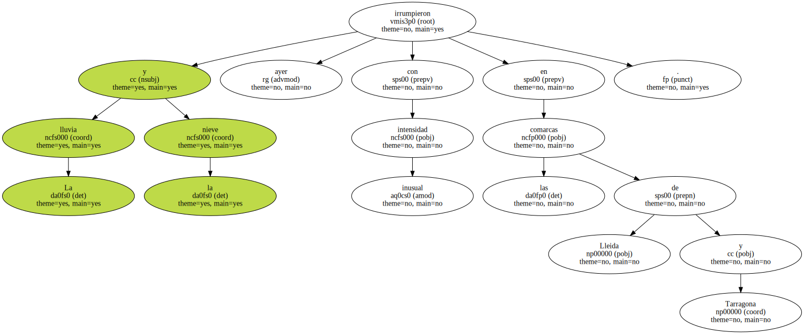Las fuertes tormentas dejaron desde la madrugada de ayer más de 60 litros de agua por metro en algunos puntos.
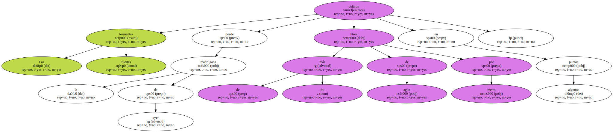A tan sólo 600 metros de altura , la nieve cubrió valles y carreteras , y acumuló hasta medio metro de grosor en la alta montaña.
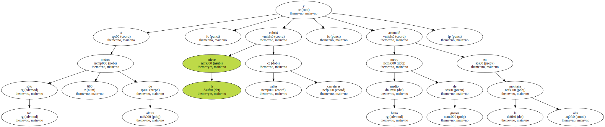En una escena típica del más riguroso invierno y no de un puente del 1 de mayo , unidades de tráfico de los Mossos d'Esquadra acompañadas de máquinas quitanieves sólo permitían circular por la mañana a partir de Vilaller ( Alta Ribagorça ) a vehículos con cadenas.
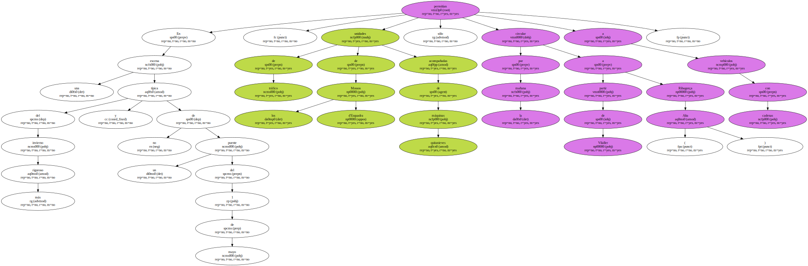También paralizaban a los camiones articulados a una y otra boca del túnel de Vielha , ciudad que registró una de las nevadas más contundentes , pese a que alguna de sus tiendas ya lucía en los escaparates ropa de baño para el verano.
El tráfico se normalizó por la tarde , pese a que la nieve se mantenía en puntos del Vall d'Aran , Alta Ribagorça y los dos Pallars.
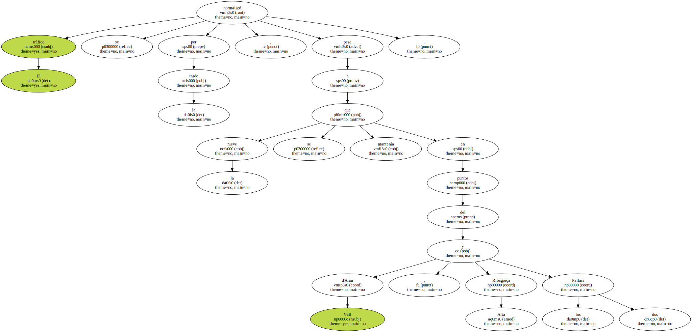La lluvia ha compensado el que estaba a punto de convertirse en el mes de abril más seco del siglo , y tendrá efectos benignos para algunos cultivos , como el de aceituna y , previsiblemente , el de fruta dulce.
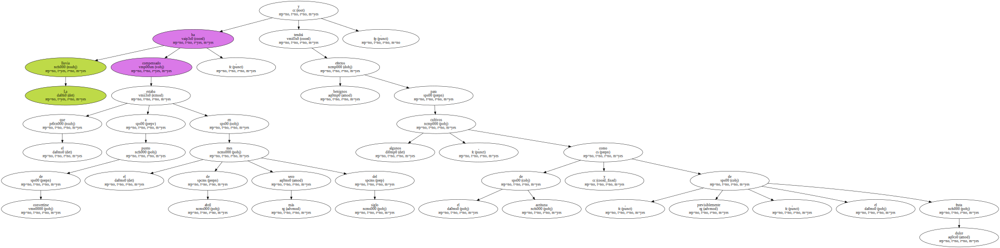El sindicato Unió de Pagesos auguró ayer pérdidas de 9.000 millones de pesetas , por quinto año consecutivo , para el sector de los cereales , que perderá el 50% de la cosecha por la sequía , primero , y el viento , después.
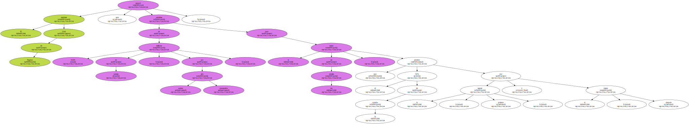En las comarcas tarraconenses de Ribera d'Ebre , Terra Alta y Priorat la lluvia dañó las cerezas en plena recolección.
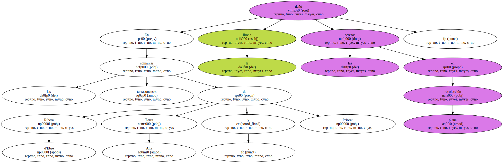El agua afectó a la piel del fruto , lo que " supone una devaluación en el mercado " , dijo Julio Montfort , de la oficina de la Conselleria d'Agricultura en la Ribera d'Ebre.
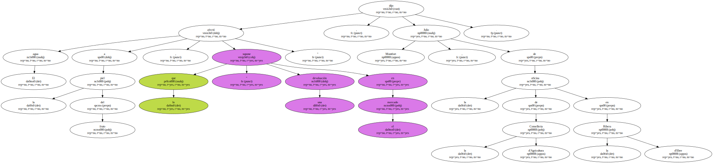El Servei Català del Trànsit censó múltiples salidas de vía a causa de los problemas de visibilidad y de seguridad generados por la lluvia.
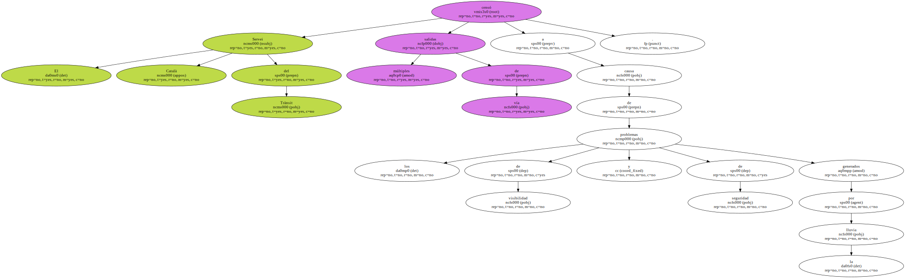El accidente más grave tuvo lugar en la A-7 , en Mont-roig del Camp.
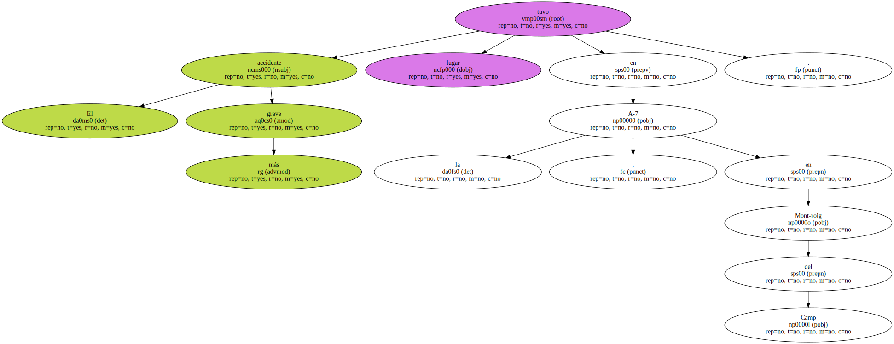Carmen C. L. , de 45 años y vecina de Lleida , falleció cuando el turismo en el que viajaba patinó y se salió de la vía.
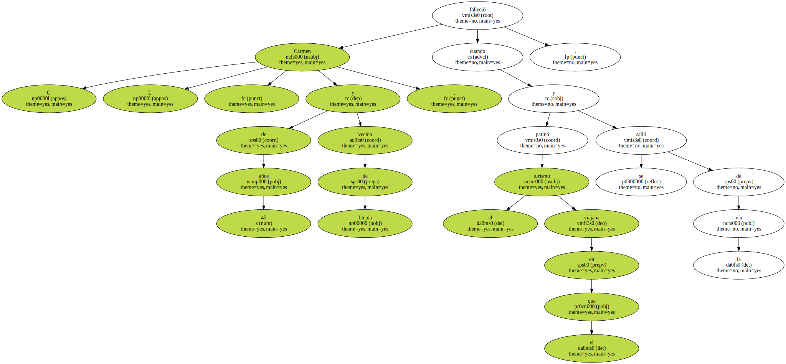El coche oficial del conseller de Treball , Lluís Franco , sufrió un derrapaje en la autopista A-2 a la altura del término de Alfés ( Segrià ) , cuando junto a otros tres ocupantes se dirigía a Lleida para reunirse con los hosteleros.
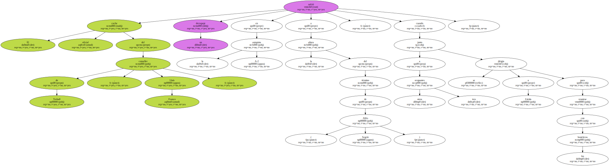Franco fue atendido de un golpe en la cabeza en el hospital Arnau de Vilanova poco después de las 17.30 horas.
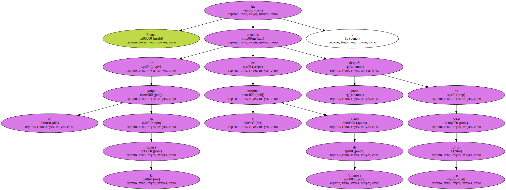Sus heridas y las de sus acompañantes eran leves.

Todos fueron dados de alta poco después.
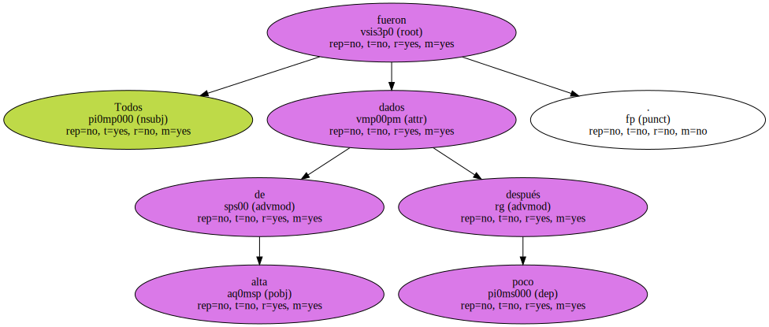